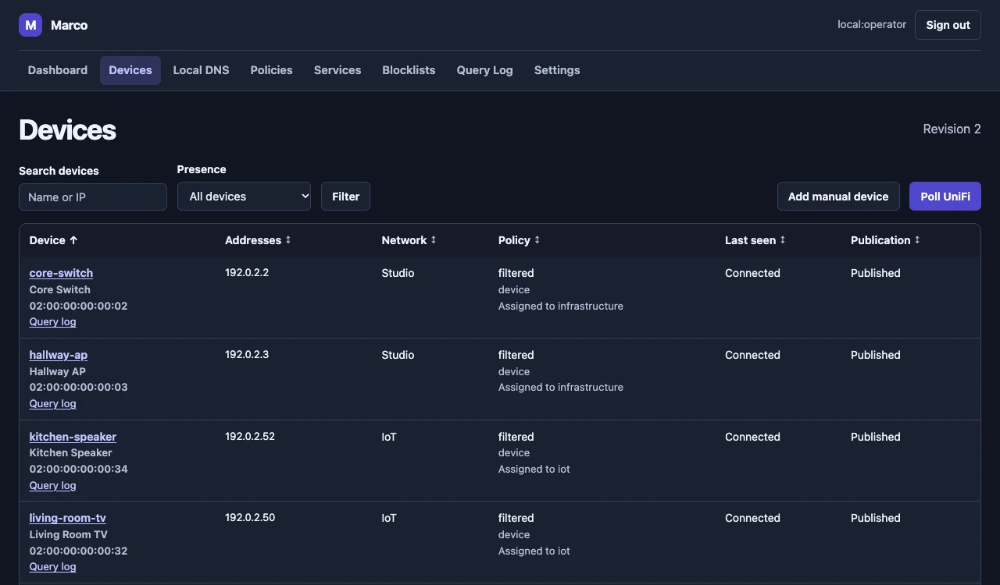
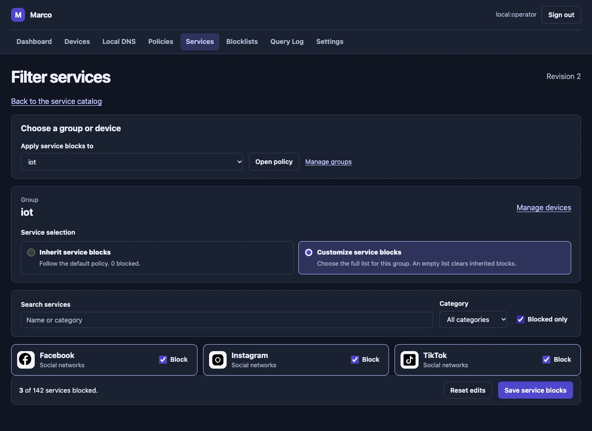

See what happened
Use traffic charts, separate policy and upstream block counts, and searchable query history. Set retention and size limits, pseudonymize client IPs, or run with counters only.
DNS dashboard guideFeatures
Marco handles local names, forwarding, and filtering in a single process. Its admin console and SQLite storage ship with it.
Local DNS · UniFi
Publish eligible UniFi clients and adopted infrastructure as local DNS records. Give your NAS, printer, or lab services stable names with manual A, AAAA, CNAME, and PTR records.

Blocklists · Client policies
Give IoT devices a policy of their own and let a laptop inherit its group’s settings. Use list subscriptions, manual allow and deny rules, and a catalog of service-specific DNS rules.

Encrypted upstreams · Conditional forwarding
Use DNS-over-TLS, DNS-over-HTTPS, or DNS-over-QUIC with certificate verification. Configure plain UDP or TCP explicitly for resolvers on a trusted network, and set up fallback endpoints within a pool.
Configure conditional forwardingnas.home.arpa*.tailnet.ts.netThe embedded HTTPS console shows what Marco resolved, cached, or blocked and which clients made the requests.
Use traffic charts, separate policy and upstream block counts, and searchable query history. Set retention and size limits, pseudonymize client IPs, or run with counters only.
DNS dashboard guideSign in with a local Argon2id password or OIDC with group-based access. Configure which LAN client subnets can query Marco separately from console access.
Admin and HTTPS guideOpt in to OIDC-protected MCP and REST APIs to inspect DNS analytics and inventory, preview policy decisions, and update policy settings.
Management API guideStart with a local lookup and open the console.